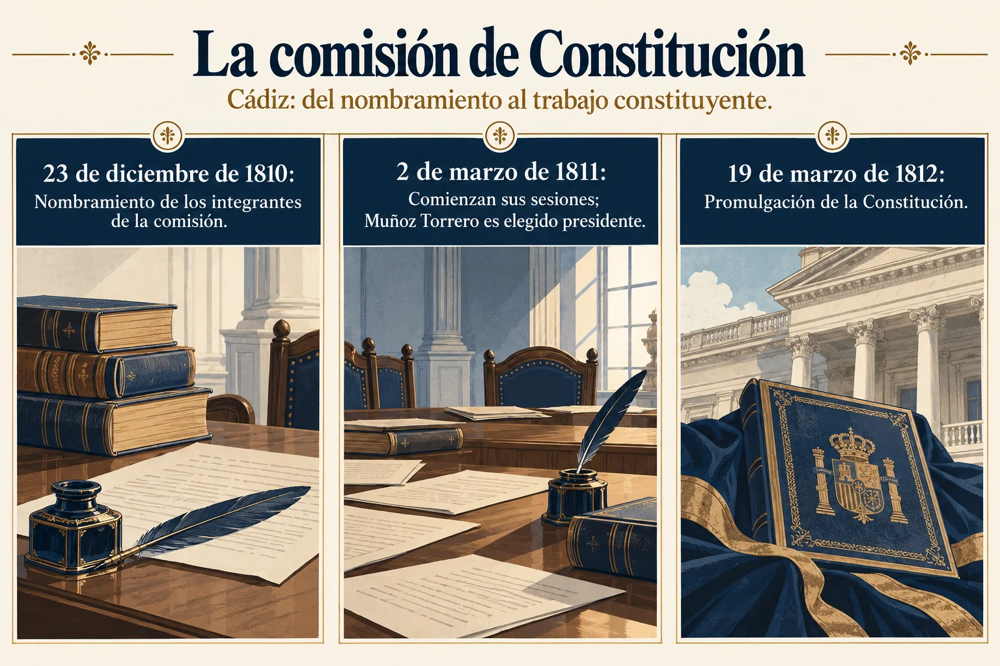

Volumen 2 · Capítulo 4 · Entrega 15
Muñoz Torrero y la palabra liberal
Estudio expositivo de Fracasología de María Elvira Roca Barea
Muñoz Torrero concentra varias de las tensiones que Roca Barea encuentra en la memoria del liberalismo español. Era sacerdote, procedía de una familia de provincias y había recibido una formación que le permitió llegar al rectorado de la Universidad de Salamanca. Su actuación en Cádiz lo sitúa entre los protagonistas de la soberanía nacional y la separación de poderes. La autora comienza por el escaso reconocimiento público de esa trayectoria y recuerda la colocación de un busto en el Congreso en 2018 por iniciativa de sus paisanos extremeños. La distancia entre la importancia de su intervención y la modestia de su recuerdo constituye el problema que intenta explicar.


Ampliar imagenLeer el esquema y sus referencias
- 23 de diciembre de 1810. Nombramiento de los integrantes de la comisión
- 2 de marzo de 1811. Comienzan sus sesiones; Muñoz Torrero es elegido presidente
- 19 de marzo de 1812. Promulgación de la Constitución
Fuente de lectura: Roca Barea, Fracasología (2019), apartado desarrollado en la entrega 15. Esquema expositivo de la interpretación de la autora; no cita literal.
El nombramiento de los integrantes en diciembre de 1810 y el inicio de las sesiones en marzo de 1811 son momentos distintos. Esta lámina sustituye al archivo llamado «14_15_comision_cadiz.png», cuyo contenido real era la comparación de símbolos históricos.
Contraste documental: Congreso: composición de la comisión Acta de la primera sesión: 2 de marzo de 1811
Su biografía reúne compromiso constitucional y persecución. Tras el regreso de Fernando VII en 1814 pasa años de reclusión en Padrón; recupera actividad política durante el Trienio Liberal y vuelve a sufrir la represión que sigue a su caída. El refugio en Portugal tampoco le proporciona seguridad: allí es encarcelado y muere en 1829. Roca Barea sigue después la recuperación de sus restos mediante una suscripción popular. La bandera entregada a los milicianos de su localidad, conservada posteriormente en las Cortes, funciona como otro vestigio de una relación entre patriotismo, movilización local y constitucionalismo que considera insuficientemente conocida.
El ensayo explica ese olvido a través de la dificultad de apropiarse ideológicamente de su figura. Un sacerdote liberal encaja mal en una división donde la condición clerical debe equivaler al absolutismo y la defensa de las libertades a su contrario. La autora lo llama «centauro» para describir esa incomodidad clasificatoria. El ejemplo tiene un alcance mayor que su biografía: recuerda la abundancia de actores cuya experiencia histórica desborda las divisiones utilizadas después para organizar el pasado. Reconocerlos exige conservar la complejidad de sus posiciones, sin convertir su pertenencia religiosa en una explicación completa de sus actos.
Muñoz Torrero permite examinar además los límites de la recuperación de una tradición propia. Roca Barea observa que los juristas gaditanos recurrieron a códigos medievales mientras apenas aprovecharon la Escuela de Salamanca, a pesar de su proximidad institucional y de sus desarrollos jurídicos. Interpreta esa distancia como una consecuencia de la desconexión con la cultura del periodo de los Austrias. La resistencia al sometimiento político a Francia no deshacía automáticamente un siglo de selecciones y olvidos culturales. Cádiz aparece así como una ruptura importante, pero también como heredera de los límites del conocimiento histórico disponible.
La definición de la nación en la Constitución de 1812 prolonga la dimensión americana del capítulo. Su artículo primero reúne a los españoles «de ambos hemisferios». La autora relaciona esa formulación con antecedentes de pertenencia común dentro de la monarquía y la contrapone a la exclusión constitucional de las posesiones coloniales francesas. Lo que quiere destacar es el propósito integrador del texto gaditano, visible también en la presencia de diputados procedentes de América y Asia. La constitución se plantea para un cuerpo político transoceánico, aunque su elaboración tenga lugar durante la crisis que está descomponiéndolo.
El apartado sobre la palabra «liberal» completa esta recuperación de iniciativa. Roca Barea distingue su antiguo significado de generosidad del nuevo empleo como identificación política. Recurre a Alcalá Galiano y al conde de Toreno para seguir su asociación con los partidarios de las reformas en Cádiz, y recuerda su difusión posterior a otras lenguas europeas. La historia del vocablo le sirve para objetar una imagen del liberalismo español como mera importación. Con este cierre, el capítulo devuelve a los actores gaditanos un lugar activo en una transformación europea. El siguiente examinará por qué ese lugar se ha confundido tantas veces con el prestigio del afrancesamiento.
Referencia de la entrega y criterio de lectura
Roca Barea (2019), capítulo 4, «Muñoz Torrero, el olvidado padre del constitucionalismo español» y «La palabra “liberal”». Notas 202–212 de la obra.
El texto reconstruye el argumento de Roca Barea. Las alusiones a otras obras proceden del ensayo y no implican la consulta independiente de todas ellas. Criterio editorial de la colección.
Referencia de la entrega. Roca Barea (2019), capítulo 4, «Muñoz Torrero, el olvidado padre del constitucionalismo español» y «La palabra “liberal”». Notas 202–212 de la obra.